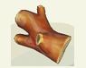

首页 / 杂物_原木
原木
原木

返回：道具图鉴
基础信息
图鉴编号：007
类别：材料
标签：材料 · 木材
获取方式
苹果树、李子树、桃花树伐木可能获得
描述
从树上伐木获得的原木，禾夏的基础木材，是制造很多家具或建筑的材料。
同图鉴
树胶 · 碎贝壳 · 珊瑚枝 · 碎木 · 银杏木 · 杉木 · 竹子 · 热木 · 猴面包木 · 龙血树木 · 仙人掌纤维 · 碎石 · 石英 · 铁矿石 · 流金石
本页面内容由玩家自行整理编辑的资料站，游戏内容版本均为测试版本
本页为《星布谷地》玩家图鉴资料页，内容整理自玩家资料站与游戏内数据，仅供参考；游戏版本更新后数据可能滞后。
站点由 GitHub Pages 静态托管 · 与游戏官方及 B 站 WIKI 无隶属关系 · 游戏素材版权归原权方所有。